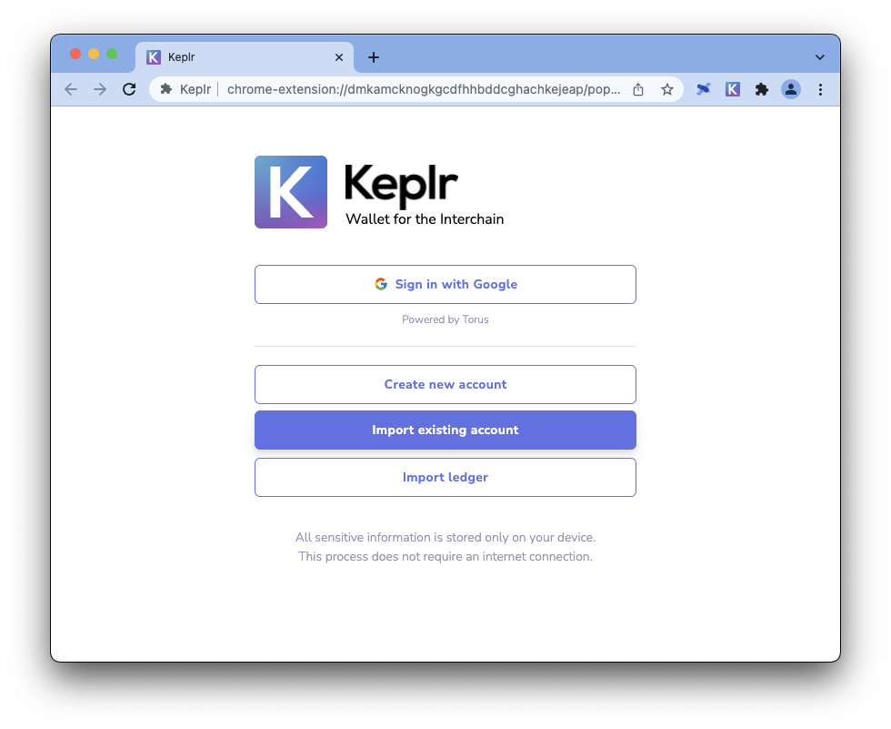
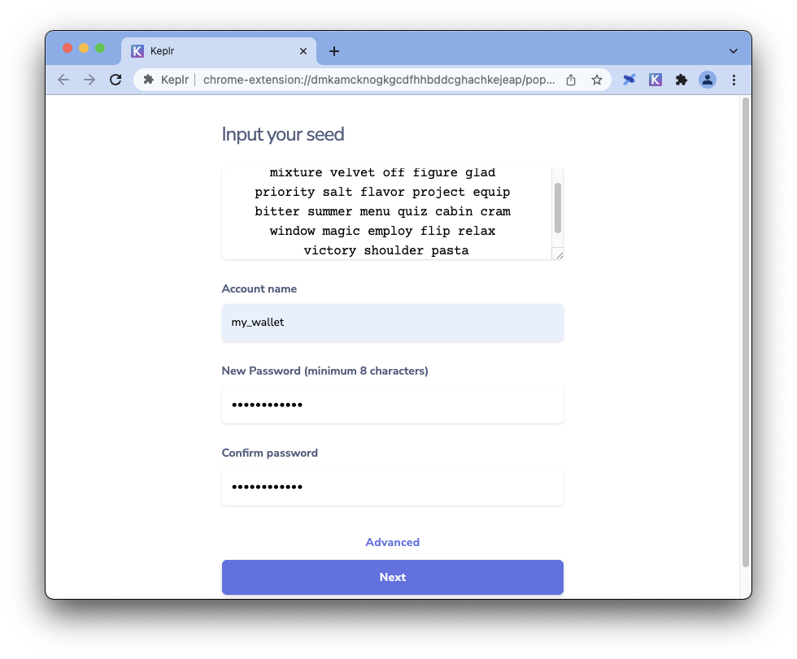
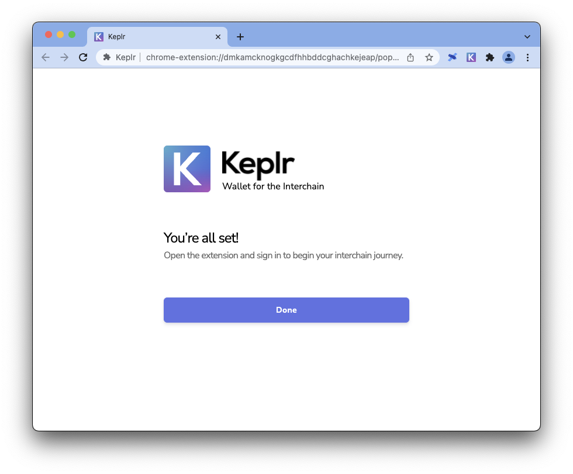
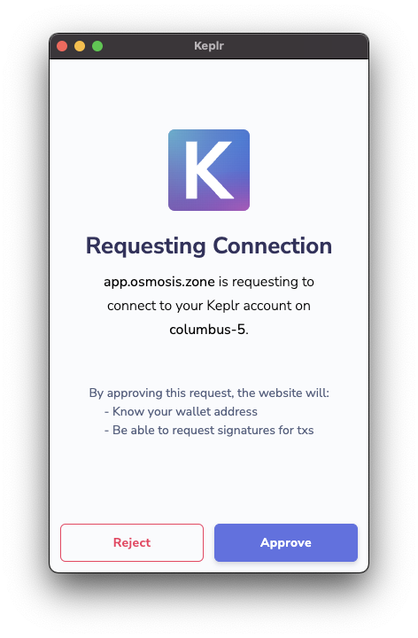
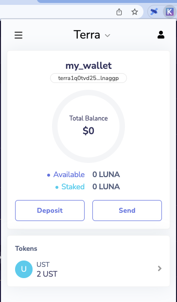

Connect your Station Wallet to Keplr
Use this guide to connect your Terra Station wallet to a Keplr wallet using a Chrome browser.
Prerequisites
Download Google Chrome.
Download the Terra Station Chrome extension and create a wallet.
Make sure you have a copy of your seed phrase written down.
Purchase UST or other tokens to fill your wallet.
Download Keplr
Visit https://www.keplr.app/ and click Install Keplr for Chrome.
In the Chrome web store, click Download.
Import your Terra Station wallet
Click on the Keplr browser extension in your browser.
Click Import existing account.
Enter the seed phrase from your Terra Station wallet, create an account name, and enter a password.
Confirm your password and click Next.
Click Done.

Enable Terra on Keplr
Open the keplr extension and enter your password.

Click Unlock. Your wallet will appear. follow the next steps to access Terra on your wallet.
Navigate to any bridge or transaction site that allows you to connect to Terra with Keplr.
Some sites may ask to connect to your wallet. If you have confirmed that the URL is correct and that the site is safe, connect your wallet by clicking Approve.
Warning
Only connect your wallet to sites you trust. Connecting your wallet to unsafe sites can result in a loss of funds. Always double-check the URL.
Navigate to the site’s Terra deposit button. Click deposit. Some sites may have a different interface.
Your wallet extension will ask you to approve a Chain Add Request.

Click Approve
Click Approve again.
Click on your Keplr extension to open it.
Click the chain selector at the top of the window.
Scroll down to select Terra.
Your Keplr wallet will show your available Terra coins.
Congratulations, you can now use Terra on a Keplr wallet!